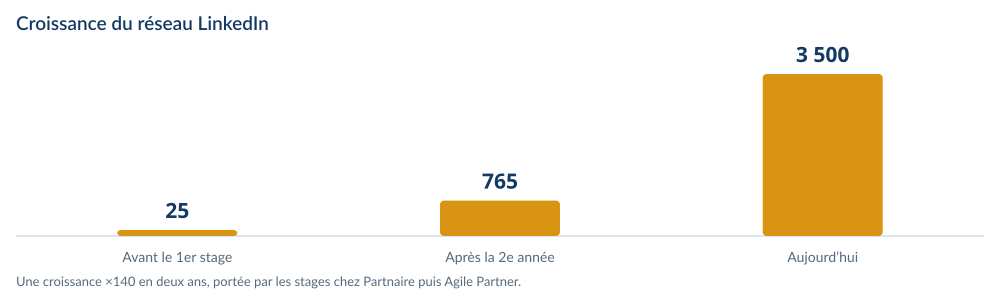
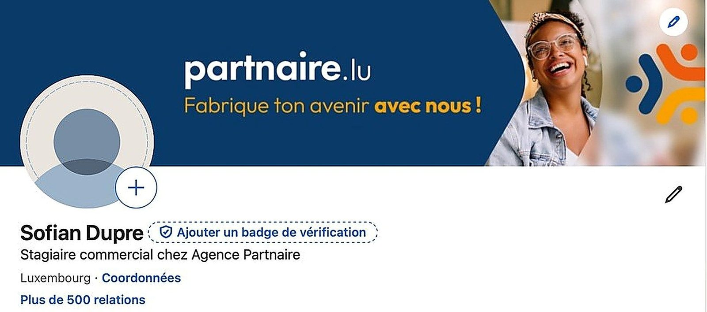
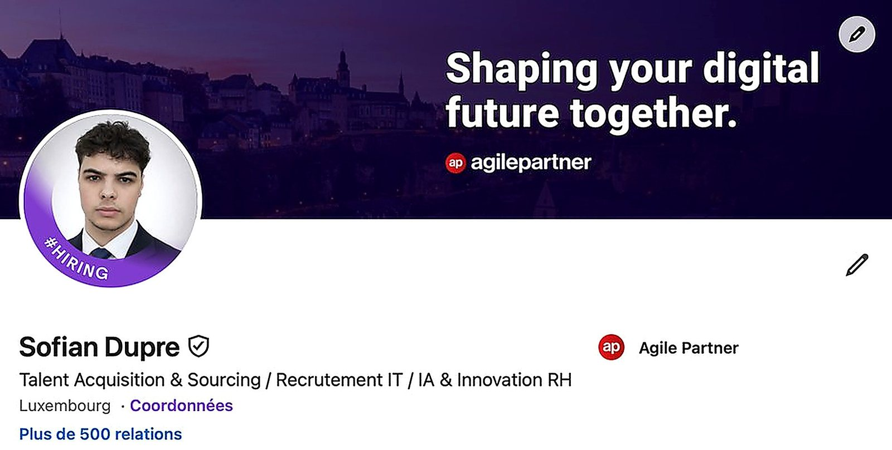

Du lycée de Longwy au Luxembourg.
Une progression en trois temps : acquérir les fondamentaux, structurer des projets, puis se professionnaliser au contact d’entreprises réelles.
Baccalauréat technologique STMG
Spécialité gestion-finance au lycée Alfred Mézières de Longwy.
1re année de BUT GEA
Les fondamentaux de la gestion : comptabilité, microéconomie, marketing, droit des affaires et finance d’entreprise. Stages au service juridique de la mairie de Longwy puis au CCAS.
2e année — parcours GEMA
Entrepreneuriat et management d’activité : business model, business plan, contrôle de gestion et environnement transfrontalier. Stage commercial chez Partnaire Luxembourg.
3e année — la dimension stratégique
Management d’équipe, innovation, transformation numérique et e-réputation. Stage de fin d’études en Talent Acquisition chez Agile Partner, au Luxembourg.
Master Management des Ressources Humaines — IMC Luxembourg
Objectif : exercer dans les ressources humaines au Luxembourg — recrutement, talent acquisition ou fonction RH généraliste — sans perdre de vue, à plus long terme, un projet entrepreneurial.
LinkedIn, 3 500+ relations.
De la création du profil en première année à plus de 3 500 relations aujourd’hui.
Une progression construite
- Première année : création du profil et premiers contacts, dans une logique de présence professionnelle.
- Deuxième année : première évolution significative du réseau, portée par le stage chez Partnaire Luxembourg et par une démarche active de mise en relation.
- Troisième année : amplification forte pour atteindre plus de 3 500 relations, en cohérence avec mes objectifs professionnels.
LinkedIn comme outil de travail
- Utilisation quotidienne de LinkedIn Recruiter chez Agile Partner pour identifier, qualifier et approcher des profils informatiques spécialisés.
- Une meilleure compréhension des techniques de sourcing, du recrutement digital et de la construction d’un réseau pertinent.
- Une prise de conscience de l’importance du personal branding : visibilité professionnelle, veille sectorielle et développement d’opportunités.


